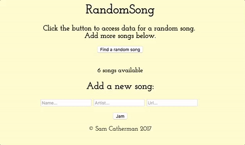
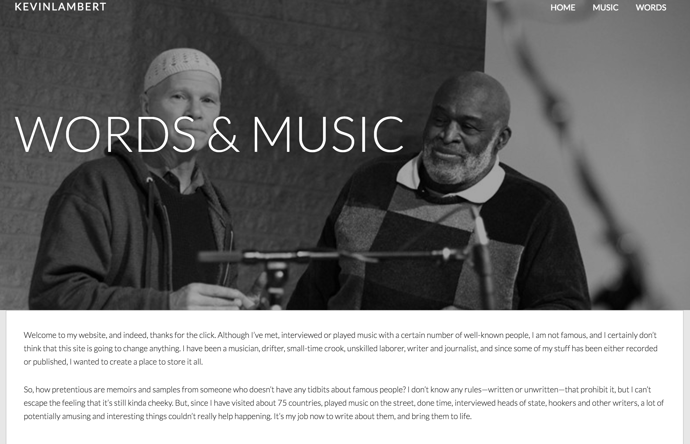

ngAir
An AngularJS application that calls on the Air Visual API to display current air quality indicators such as AQI, temperature, and wind speed.

Diddy
An interactive musical app that turns the top row of your computer’s keyboard into a single-octave piano. Built using NodeJs, AngularJs, Express and MongoDB, Diddy allows users to record and play back their own original compositions and stores them in a database.
Farmer's Market
A simple CRUD application for local farms to post their most recent harvests, built using Ruby on Rails and Postgresql. Users can sign in, browse farms and products, and create orders from different farms.

RandomSong
A simple MEAN-stack application that allows users to create and shuffle through a playlist. Just click the randomSong button, and retrieve a truly random song from your collection.
Kevin Lambert Words and Music
A good friend of mine, Kevin Lambert, asked me to help him build a portfolio site. A longtime musician and writer, Kevin wanted a home for his recordings, photos and stories.
